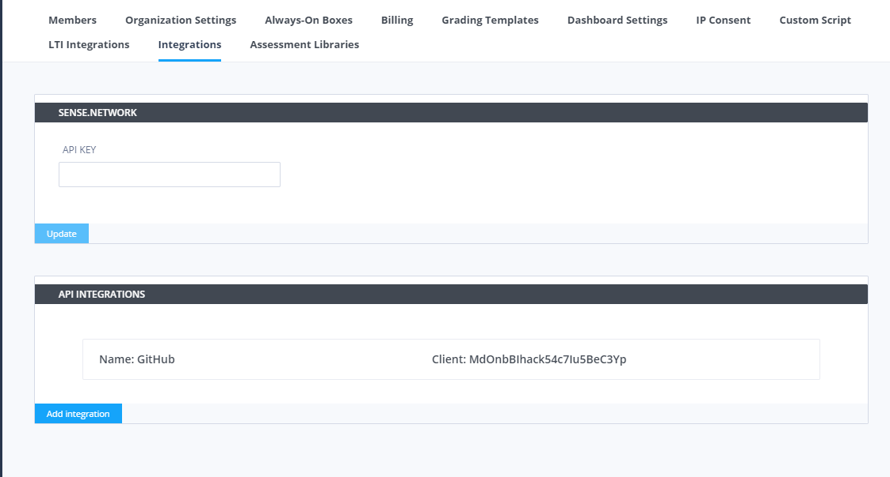
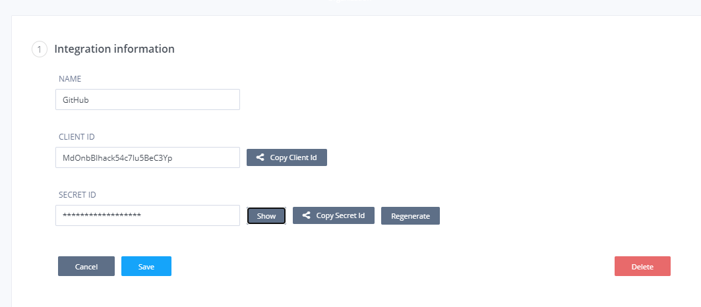
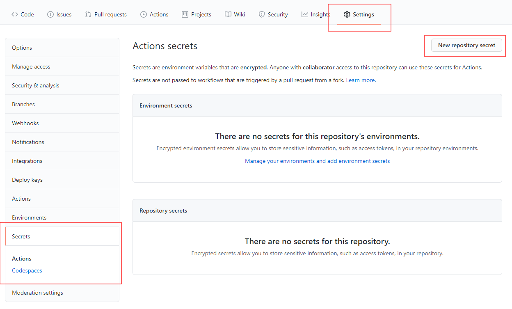
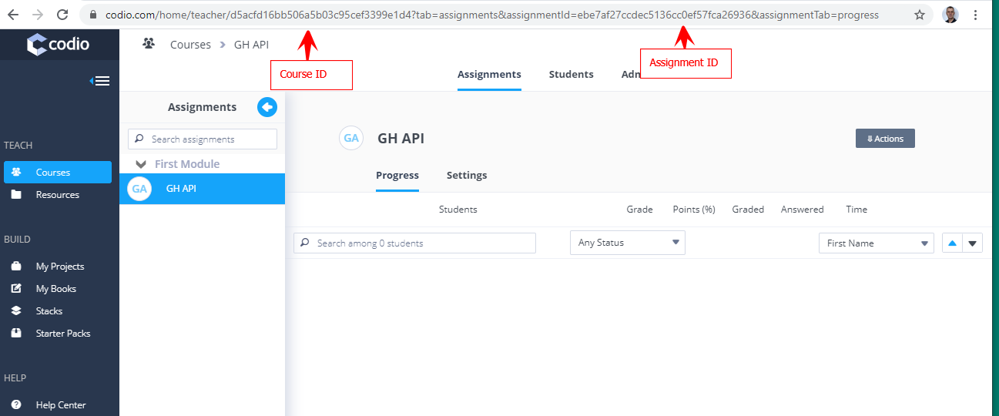
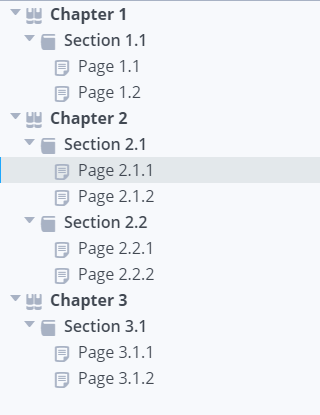

Git Hub API¶
The Git Hub API can be used with Git Hub Actions to automate the publication of assignments.
You are able to create your assignments in Codio, connect the box to your GH repo and when merging your branch to master will be able to automatically publish the Codio assignment.
Set up GitHub API Integration¶
Create your API integration in the Organization->Integrations area. This is only available to users with Admin rights.

The name of the integration is added to the version history record. There is no limit to the number you can create so you can use the ID’s in your individual GH repo or use in your GH account to apply to all repos
API Integration information¶
Click on the created integration to view the Client and Secret ID’s where you can copy to clipboard to add into your GH account

The secret ID can be regenerated if required to manage/control access to publishing the codio assignment.
Adding ID’s to GitHub account¶
In your repo go to Settings -> Secrets and create Client ID and Secret ID copying in from your Codio integration.

To create your secrets for the Codespace (ie applies for all repos in the account and available for all collaborators), click on Actions-> Codespaces or to create just for the individual repo, click on New repository secret and create your secret keys.
We recommend you name each key including Client/Secret to identify which key is which and use other names to identify if it is just for this repo or for all repos in the codespace
Implementing workflow actions¶
From your repository on GitHub or within your project, create a new file in the .github/workflows directory with the extension .yml and configure
for use.
See Quickstart for GitHub actions
Example .yml file for publishing a project to an assignment¶
name: codio-publish
# Run this workflow every time a new commit pushed to your repository branch noted below
on:
push:
branches:
- master
jobs:
build:
# Set the type of machine to run on - do not change this. Any warnings you may see in workflow actions can be ignored
runs-on: ubuntu-latest
steps:
# Checks out a copy of your repository on the ubuntu-latest machine
- name: Checkout
uses: actions/checkout@v1
- name: Cleanup
# removes the following files/folders when publishing
run: rm -rf README.md
- name: Publish to Codio
uses: codio/codio-assignment-publish-action@master
with:
# Use the ID's from the secrets below
client-id: ${{ secrets.CODIO_PRODUCTION_CLIENT_ID }}
secret-id: ${{ secrets.CODIO_PRODUCTION_SECRET_ID }}
dir: ./
course-id: d5acfd16bb506756595cef3399e1d4
assignment-id: 3b52656756565656cd19a4b869b8
changelog: ${{ github.event.head_commit.message }}
# Set the domain you are working on - codio.com or codio.co.uk
domain: codio.com
The course/assignment id’s are found from the URL in your browser when opening the assignment when on the Teach tab. The assignments need to be published to get this information

Publishing projects into multiple assignments¶
If you have a large project, you can use the same methodology to publish the project into multiple assignments in as many different modules as you required.
Mapping your project structure into the individual assignments¶
From your repository on GitHub or within your project, create a new folder in the .github/workflows directory and within that create individual .yml files for each of the assignments you wish to publish the project into, defining the ‘assignment’, ‘section’ and ‘paths’. It is these files that define what Chapters/Sections/Files from the main project are published into individual assignments
Example .yml file mapping section from project into individual assignments:¶

Based on the above image, to split the project into 3 separate assignments requires 3 .yml files in the mapping folder set above
To publish Chapter 1, Section 1.1 into an assignment:
# the id of assignment 1
- assignment: 617c4f1cf9dcb8764hjk97100a980a09
# the section from guides, where both the Chapter and Section names are set in Guides
section: ["Chapter 1", "Section 1.1"]
# to include all files contained in the folder Section 1.1
paths: ['Section 1.1/**']
To publish Chapter 2, Section 2.1 and Chapter 2, Section 2.2 into an assignment:
# the id of assignment 2
- assignment: 36f5f6d99f69a7dc65f5ce8d619e8494
section: ["Chapter 2", "Section 2.1"]
paths: ['Section 2.1/**']
# to include another section from guides in the assignment
- assignment: 36f5f6d99f69a7dc65f5ce8d619e8494
section: ["Chapter 2", "Section 2.2"]
paths: ['Section 2.2/**']
To publish Chapter 3, Section 3.1 into an assignment:
- assignment: 399098453265fb2c3eca360db6f5e462f
section: ["Chapter 3", "Section 3.1"]
# will show all files set to be visible whether within a folder shown for the student or in the workspace
paths: ['**']
Example .yml workflow actions file for publishing into multiple assignments:¶
name: codio-publish
# Run this workflow every time a new commit pushed to your repository branch noted below
on:
push:
branches:
- master
jobs:
build:
# Set the type of machine to run on - do not change this. Any warnings you may see in workflow actions can be ignored
runs-on: ubuntu-latest
steps:
# Checks out a copy of your repository on the ubuntu-latest machine
- name: Checkout
uses: actions/checkout@v1
- name: Cleanup
# removes the following files/folders when publishing
run: rm -rf README.md
- name: Publish to Codio
uses: codio/codio-assignment-publish-action@master
with:
# Use the ID's from the secrets below
client-id: ${{ secrets.CODIO_PRODUCTION_CLIENT_ID }}
secret-id: ${{ secrets.CODIO_PRODUCTION_SECRET_ID }}
dir: ./
course-id: d5acfd16bb506756595cef3399e1d4
changelog: ${{ github.event.head_commit.message }}
# the location of your yaml mapping files
yml: ./.github/yaml_map
# Set the domain you are working on - codio.com or codio.co.uk
domain: codio.com
Note
The ‘assignment-id’ field is not required when publishing to multiple assignments. The mapping of the content from the project to the individual assignments is managed by the files in the ‘yml’ location
Working with GH API¶
The basic premise is that when updating your Codio assignment, you connect to your GH repo and create a new branch. Make your required changes and push to your repo. When you then merge your branch to the master branch, the GH workflow runs and publishes your Codio assignment. Progress/errors can be reviewed from the Actions area in your repo It is recommended when you merge, that you select the option Squash and Merge as you can combine all your merge request’s commits into one and retain a clean history.
Working with GH API in staging¶
Your .yml file is commonly set up to execute against merges into the master branch but can be changed to execute when other branches merged and the codio assignment to be updated can be managed by reviewing/changing the course/assignment ids